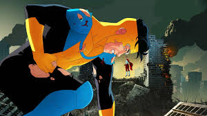
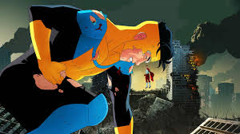
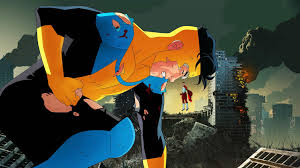

Invincible Invencível é uma série animada de televisão norte americana de super-herói destinada
ao público adulto, baseada no personagem Mark Grayson da revista em quadrinhos de mesmo nome criada por Robert
Kirkman, que estreou no serviço de vídeo sob demanda Amazon Prime Video em março de 2021, com as vozes de Steven
Yeun, Sandra Oh e JK Simmons, sobre a vida um adolescente normal, filho do super-herói mais poderoso do planeta,
que próximo a juventude desenvolve poderes e passa a ser tutelado pelo pai.
PERSONAGENS
A Família Grayson
Steven Yeun como Mark Grayson, o Invincible: o herói homônimo e personagem principal, que inicia como um jovem de 17
anos que, depois ganha seus tão esperados poderes, descobre a dura realidade de ser um super-herói. Ele é vagamente
baseado em Superboy e Peter Parker.
Sandra Oh como Debbie Grayson: mãe de Mark e esposa de Omni-Man. Debbie é uma corretora de imóveis que se adaptou bastante
ao fato de ser casada com um super-herói que as aventuras usuais não a incomodam mais. Ela lentamente percebe uma mudança no
comportamento de Nolan após sua hospitalização. Ela é vagamente baseada em Lois Lane.
JK Simmons como Nolan Grayson, o Omni-Man: pai de Mark, marido de Debbie e o herói mais forte da Terra. Nascido no planeta
Viltrum, uma raça alienígena poderosa, Nolan se ofereceu para viver na Terra mais de 20 anos antes da série para protege-la,
pouco tempo depois que seus pais morreram. Ele é vagamente baseado no Superman.

.jpeg) 
